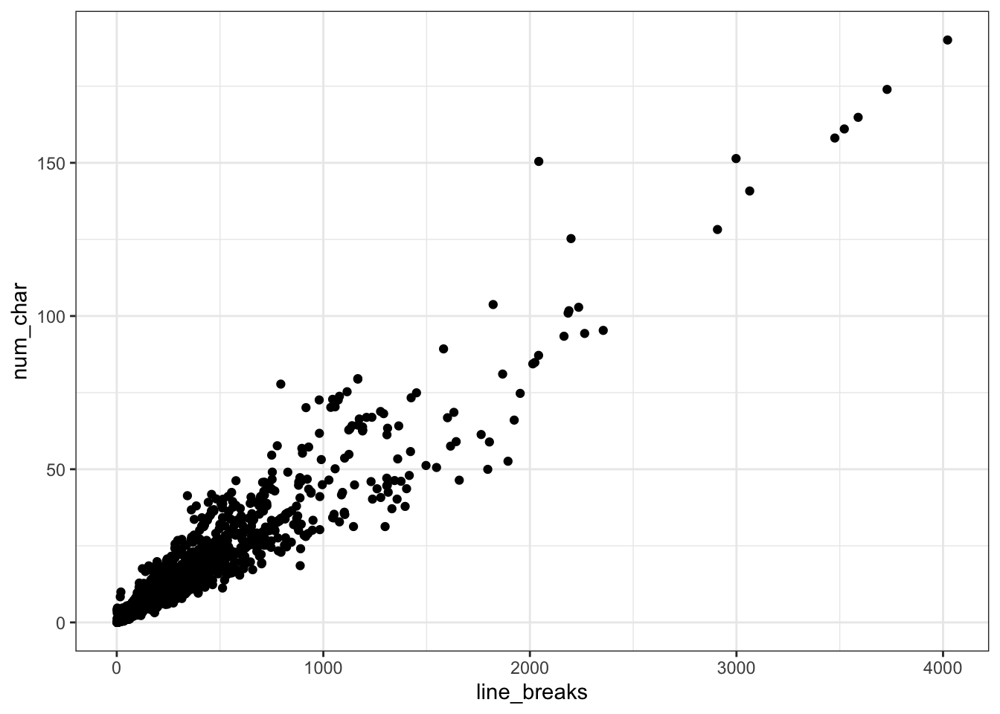
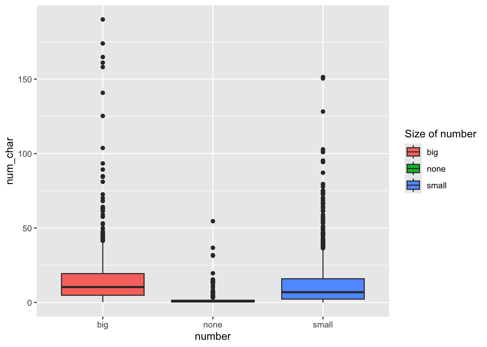
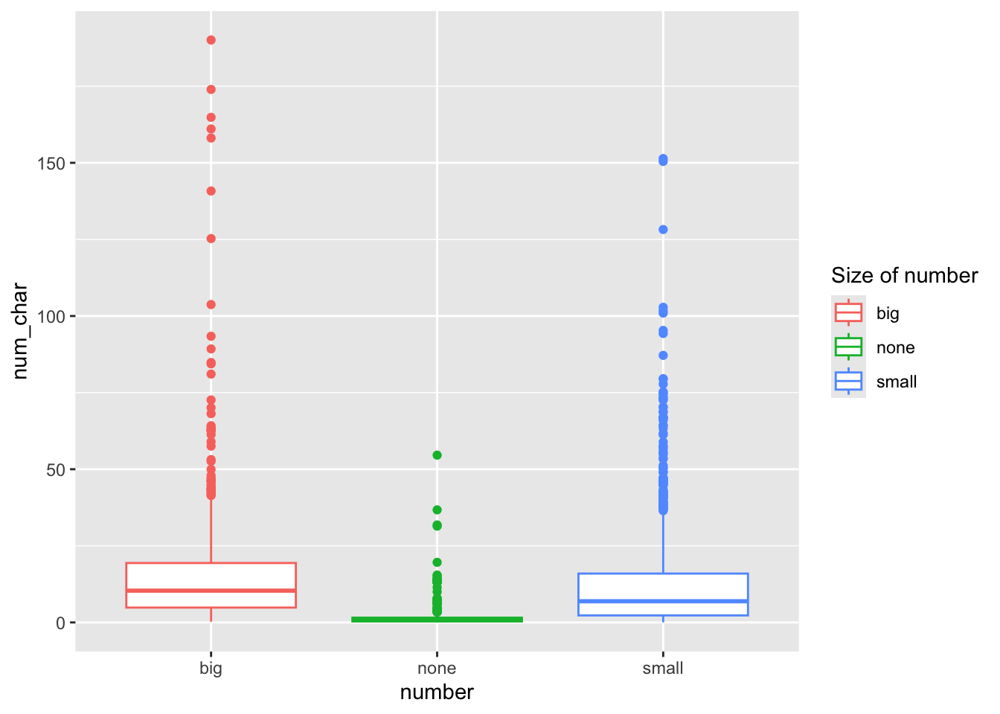
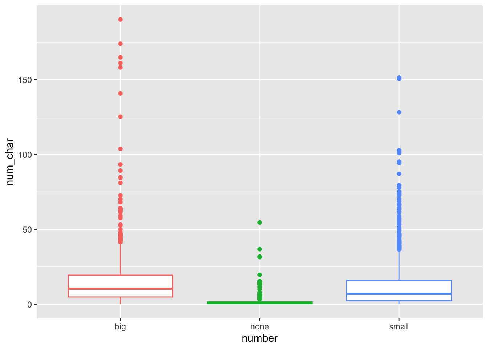
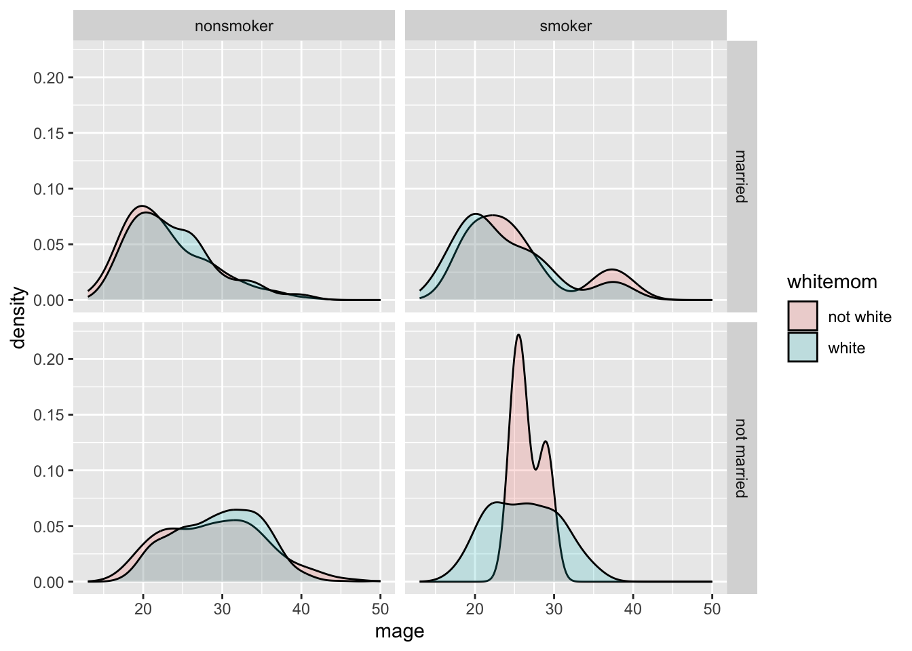
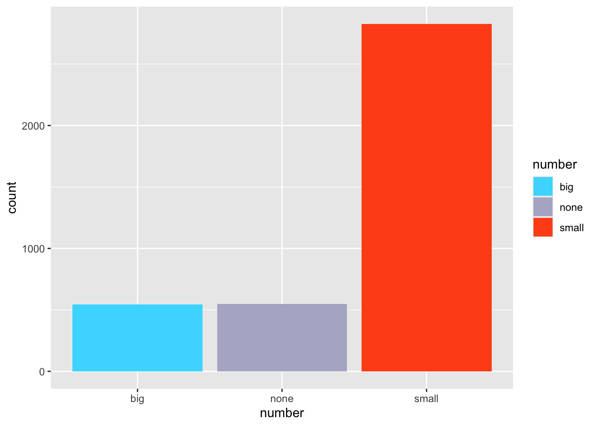
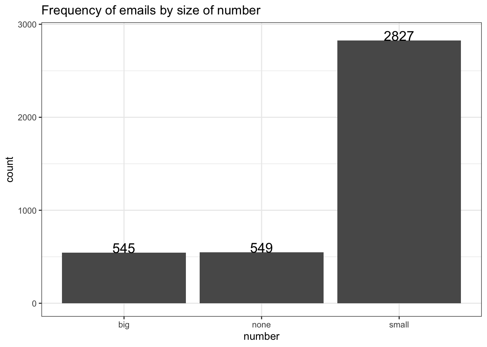
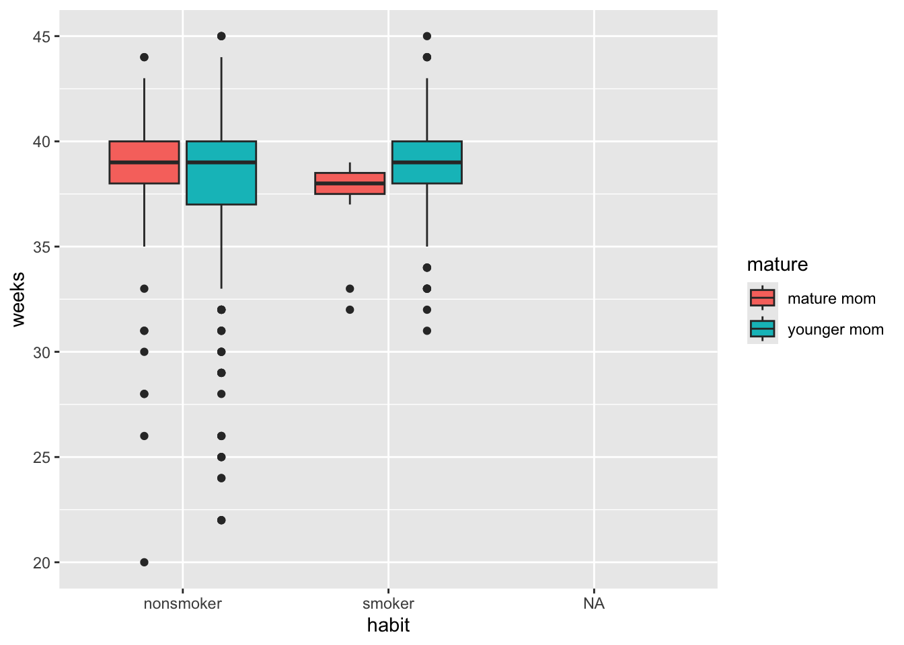
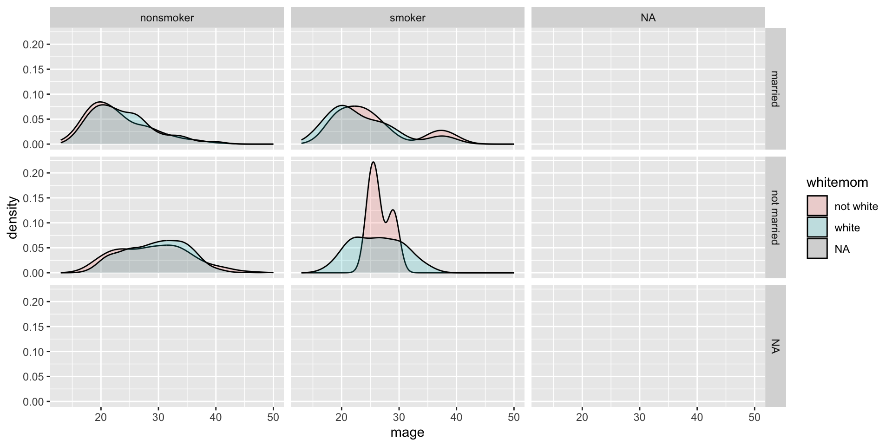

library(tidyverse) # ggplot, forcats
library(ggpubr)
email <- openintro::email
NCbirths <- openintro::ncbirths
pen <- palmerpenguins::penguins9 Plot Enhancements
Section Chapter 6 introduced the main plotting packages ggplot2, ggpubr, and sjPlot and focused on creating the correct graphics for the data types. This lesson expands on those tools and demonstrates how to customize some features and add enhancements to clarify or to add information to a plot.
Too much to memorize!
There is NO need to remember all of these adjustments when there are incredibly handy reference guides and “cookbooks” available.
- https://r-graphics.org/
- https://r-graph-gallery.com
- https://ggplot2.tidyverse.org/reference/index.html
- https://r-charts.com
This lesson also has no specific order, but is a smattering of “things you should know”.
This lesson uses several data sets that we have seen in prior lessons.
9.1 Reorder barcharts in decreasing order
We can reorder these levels on the fly so they are being shown in decreasing frequency using the fct_infreq function from the forcats library. You can add this layer to both ggplot and ggpubr creations.
ggplot(pen, aes(
x=fct_infreq(island))) +
geom_bar() + xlab("Island")
9.2 Flipping the axis
Sometimes barcharts and boxplots look better horizontally, especially when the category labels are long, but the default is vertical. We can add a coord_flip layer to nearly any plot to rotate it 90*.
ggplot(pen, aes(x=island)) + geom_bar() +
coord_flip()
ggboxplot(pen, y= "body_mass_g", x = "island") +
coord_flip()

9.3 A “better” Pie chart
We need to pre-calculate the percentages first, then plot those summary numbers. So we will chain functions from dplyr and ggpubr together.
See the R graph gallery for how to make a pie chart in
ggplot.1pen %>%
2 group_by(island) %>%
3 tally() %>%
4 mutate(pct = scales::percent(n/sum(n)),
5 labs = paste0(island, "\n n=", n, "(", pct, ")")) %>%
6 ggpie(x = "n",
7 label = "labs",
8 fill = "island",
9 lab.pos = "in")- 1
-
Take the
penguindata set - 2
-
perform these calculations for each
islandseparately - 3
-
tally()counts the number of records by group (liketable), and stores it in a new variable namedn(this is a default name) - 4
-
create a new variable
pctthat calculates the percent in each group by dividing the group countn, by the total number of recordssum(n), then using thepercentfunction from thescalespackage to display this decimal as a percent - 5
-
Create chart labels by
pasteing the value of the variableisland, then a line break (new line)\n, then the textn=, then the value of the variablen, followed by the value of the percent variablepctwrapped in parenthesis - 6
-
pass all of this summarized data into
ggpie- the function to create the pie chart, and specify that the numbers to be plotted is in the variablen - 7
-
and that the wedge labels are found in the variable
labsthat was created in step 5 - 8
-
color the wedges based on the
islandvariable - 9
- and put these labels inside the circle

9.4 Adding the mean
Adding annotation on a numeric distribution plot to indicate where the mean is located is often a nice informative feature.
The mean can be denoted on geom_histogram or geom_density using a vertical line (geom_vline) where the xintercept is set as the calculated mean of the variable being plotted.
With boxplots and violins, the code below uses the stat_summary layer to add the mean as a summary function, we plot it as a point on the graph, shape=17 makes it a triangle (see ?pch for more shapes), size=4 makes it a bit larger so it stands out. There are also color and fill options available if desired.
ggplot(pen, aes(x=body_mass_g)) +
geom_histogram() +
geom_vline(aes(xintercept=mean(body_mass_g, na.rm = TRUE)),
color="blue", linetype="dashed")
ggplot(pen, aes(y=body_mass_g, x = island)) +
geom_boxplot() +
stat_summary(fun="mean", geom="point",
shape=17, size=4) 
geom_vline to add to a histogram or density
stat_summary to add the mean to a boxplotPlay around with the shape, fill/color, and size until you achieve your desired look.
With ggpubr you can use use the add="mean" argument to both gghistogram and ggdensity to add a vertical dashed line to denote the location of the mean.
gghistogram(pen, x="body_mass_g", fill = "species",
add = "mean",)
ggboxplot(pen, y="body_mass_g", x = "species", fill = "species",
add = "mean_se", add.params = list(color = "white"))
With ggpboxplot, you can add many summary statistics such as the mean as a dot and line representing uncertainty such as the standard deviation (sd) and standard error (se). I also used add.params to make the color of these means easier to see. See the add and add.params entries in the help file for ?ggboxplot for more options.
9.4.1 Histograms + density curve
Often it is more helpful to have the density (or kernel density) plot on top of a histogram plot.
1ggplot(pen, aes(x=body_mass_g)) +
geom_density(col="blue") +
2 geom_histogram(aes(y=..density..), colour="black",
3 fill=NA)- 1
-
The syntax starts the same: we’ll add a
geom_densityand color the line blue for funsies. - 2
-
Then we add the histogram geom using
geom_histogrambut must specify that the y axis should be on the density, not frequency, scale. Note that this has to go inside the aesthetic statementaes(). - 3
-
I’m also going to get rid of the fill by using
NAso the colored bars don’t plot over the density line.

You start with a gghistogram and then add_denstity to the plot. This does not always work well with every variable. Sometimes the density plot is too small to view.
gghistogram(pen, x = "bill_depth_mm", fill = "species",
add_density = TRUE)9.5 Adding violins to a boxplot
A violin plot is like a density plot, turned on its side, and reflected around the axis for symmetry purposes. Overlaying a boxplot and a violin plot serves a similar purpose to Histograms + Density plots. It shows outliers, the location of most the data, and better shows the shape/skew of the distribution.
ggplot(pen, aes(x=body_mass_g, y=island, fill=island)) +
geom_violin(alpha=.1) +
geom_boxplot(alpha=.5, width=.2)
We start with a ggviolin and then add a boxplot. Note that I also add coord_flip() to change the orientation of the boxplots to horizontal.
ggviolin(pen,
x="island", y = "body_mass_g",
color = "island", add = c("mean", "boxplot")) +
coord_flip()
9.6 Themes
The standard theme has a gray background, white grid lines etc. Themes can be changed by adding theme_X() where X has several options
ggplot(email, aes(x=line_breaks, y=num_char)) + geom_point() +
theme_bw()
ggplot(email, aes(x=line_breaks, y=num_char)) + geom_point() +
theme_void()
ggplot(email, aes(x=line_breaks, y=num_char)) + geom_point() +
theme_dark()


Explore tons more themes at https://r-charts.com/ggplot2/themes/
9.7 Legends (keys)
9.7.1 Title of legend
Add the name= argument to whatever layer you added that created the legend. Here I specified a fill, and it was a discrete variable. So I use the scale_fill_discrete() layer.
ggplot(email, aes(y=num_char, x=number, fill=number)) + geom_boxplot() +
scale_fill_discrete(name="Size of number")
Here I color the box outlines so the layer is scale_color_discrete().
ggplot(email, aes(y=num_char, x=number, col=number)) + geom_boxplot() +
scale_color_discrete(name="Size of number")
9.7.2 Moving & removing the legend
The legend.position can be controlled using a theme() layer.
ggplot(email, aes(y=num_char, x=number, col=number)) + geom_boxplot() +
theme(legend.position = "top") 
Note that this involves a call to theme(). If you have apply a named theme like theme_bw() after setting legend.position using theme, it will overwrite that modification. The order of ggplot layers matters.
ggplot(email, aes(y=num_char, x=number, col=number)) + geom_boxplot() +
theme(legend.position = "top") +
theme_minimal()
ggplot(email, aes(y=num_char, x=number, col=number)) + geom_boxplot() +
theme_minimal() +
theme(legend.position = "top")
Sometimes the legend is not needed. It’s providing redundant information and takes up space, so let’s remove it entirely by adding guide="none" to the scale_ layer.
ggplot(email, aes(y=num_char, x=number, col=number)) + geom_boxplot() +
scale_color_discrete(guide="none")
9.8 Title and axis labels
A good plot needs to stand alone and convey as much information as possible. ggplot2 provides a single labs function that is very versitile and includes options for alt-text as well. See ?labs for more information
titlefor an overall plot titleyandxadjust the axis labels.- using
\ncreates a line break
ggplot(email, aes(y=num_char, x=number, col=number)) +
geom_boxplot() +
scale_color_discrete(guide="none") +
labs(
title = "Distribution of the number of characters in an email \n based on the size of the number in the email",
x = "Size of number in email",
y = "Number of characters"
)
9.9 Changing colors
Full guide on how to change colors in ggplot2 at https://r-graph-gallery.com/ggplot2-color.html
ggplot(email, aes(x=number, fill=number)) + geom_bar() +
scale_fill_manual(values=c("red", "green", "blue"))
There’s some spectacularly colors available. See https://r-charts.com/colors/ for the full list. You can also type colors() in the console.
ggplot(email, aes(x=number, fill=number)) + geom_bar() +
scale_fill_manual(values=c("salmon", "slategray4", "violet"))
And you can use hex colors
ggplot(email, aes(x=number, fill=number)) + geom_bar() +
scale_fill_manual(values=c("#47dbff", "#b3b3cc", "#ff531a"))
There are 3 types of palettes:
Sequential palettes are suited to ordered data that progress from low to high. Lightness steps dominate the look of these schemes, with light colors for low data values to dark colors for high data values.
Diverging palettes put equal emphasis on mid-range critical values and extremes at both ends of the data range. The critical class or break in the middle of the legend is emphasized with light colors and low and high extremes are emphasized with dark colors that have contrasting hues.
Qualitative palettes do not imply magnitude differences between legend classes, and hues are used to create the primary visual differences between classes. Qualitative schemes are best suited to representing nominal or categorical data.
9.9.1 R ColorBrewer
One of the most common color pallet packages used. See the full set of palettes available.
The function to use is scale_fill_brewer (or scale_color_brewer), with an argument specifying the palette name in quotes.
library(RColorBrewer)
ggplot(email, aes(x=number, fill=number)) + geom_bar() +
scale_fill_brewer(palette = "Dark2")
9.9.2 Viridis
viridis provide a series of color maps that are designed to improve graph readability for readers with common forms of color blindness and/or color vision deficiency. Eight scales are available, but magma, inferno, plasma, and viridis as defined in Matplotlib for Python. These color maps are designed in such a way that they will analytically be perfectly perceptually-uniform, both in regular form and also when converted to black-and-white. They are also designed to be perceived by readers with the most common form of color blindness.
If you are filling or coloring by a categorical variable, you’ll use the corresponding scale_fill_discrete or scale_color_discrete function, and then pass the name of the palette with the number of levels needed as a function to the palette argument.
library(viridisLite)
ggplot(email, aes(x=number, fill=number)) + geom_bar() +
scale_fill_discrete(palette = magma(3))
9.10 Multivariate plotting
So far we’ve only looked at how to plot 2 variables on the same plot. Let’s up our game some.
In the first plotting lesson, we filled the boxes with the same categorical variable that was on the x axis. We can also fill (or color) the boxes by a third variable if you want an additional comparison.
ggplot(NCbirths, aes(y=weeks, x=mature, fill=habit)) + geom_boxplot()
This lets us compare the distribution of gestation period for smokers vs non smokers, within mature and younger moms.
1NCbirths %>%
select(weeks, weight, habit) %>%
filter(!is.na(habit)) %>%
2ggplot(aes(x=weeks, y=weight, color = habit)) +
geom_point() + geom_smooth(se=FALSE) +
3 theme_minimal() + scale_color_brewer(palette = "Set1")- 1
-
Starting with the
NCbirthsdata set, Iselectthe variables i want to plot, and then usefilterto drop rows with missing values forhabit. - 2
-
Create a scatterplot for gestation
weeksagainst babyweight, coloring by the mothers smokinghabit. Add both points and loess lines. - 3
- Make the graph more visually readable by modifying the theme and adding a color palette.

9.11 Faceting / paneling
ggplot introduces yet another term called faceting. The definition is a particular aspect or feature of something, or one side of something many-sided, especially of a cut gem. Basically instead of plotting the grouped graphics on the same plotting area, we let each group have it’s own plot, or facet.
We add a facet_wrap() and specify the variable we want to panel on after the ~ tilde.
ggplot(NCbirths, aes(x=mage, fill=gender)) + geom_density(alpha=.3) +
facet_wrap(~mature)
The grid placement can be semi-controlled by using the ncol argument in the facet_wrap() statement.
ggplot(NCbirths, aes(x=mage, fill=gender)) + geom_density(alpha=.3) +
facet_wrap(~mature, ncol=1)
It is important to compare distributions across groups on the same scale, and our eyes can compare items vertically better than horizontally.
9.11.1 Paneling on two variables
Who says we’re stuck with only faceting on one variable? Usingfacet_grid( we can specify multiple variables to panel on.
NCbirths %>%
select(weeks, marital, habit, mature) %>%
filter(!is.na(habit)) %>%
ggplot(aes(x=weeks, fill=mature)) + geom_density(alpha=.2) + facet_grid(marital~habit)
- Distribution of weeks
- colored by maturity status
- paneled on the combination of smoking habit and marital status
9.12 Multiple plots per window
We can set the number of columns figures show up in using code chunk option: layout-ncol. This method works only in Quarto documents.
```{r}
#| layout-ncol: 2
ggplot(pen, aes(x=body_mass_g, fill=species)) + geom_density(alpha=.2)
ggplot(pen, aes(x=body_mass_g, col=island)) + geom_density()
```